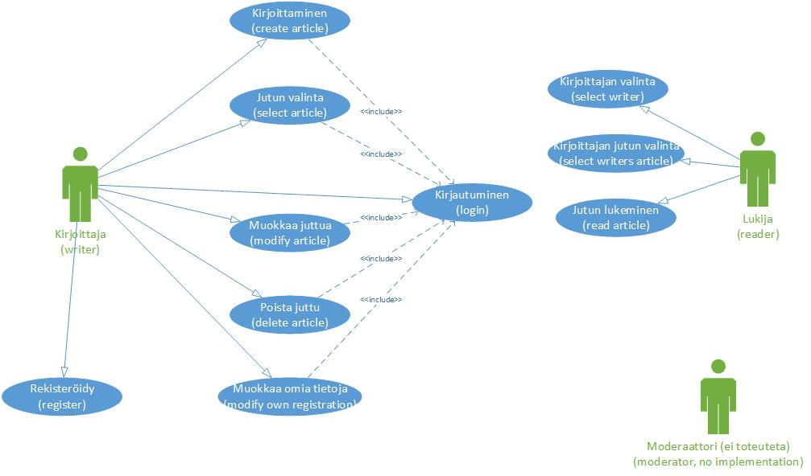
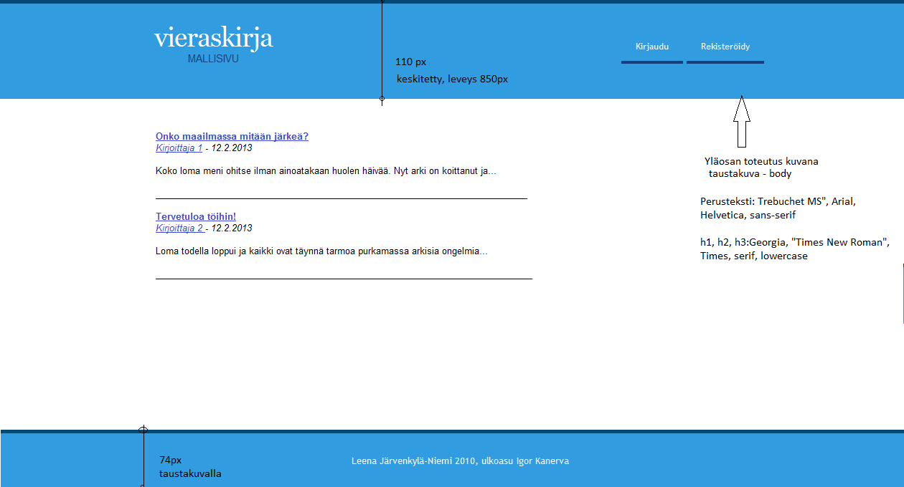
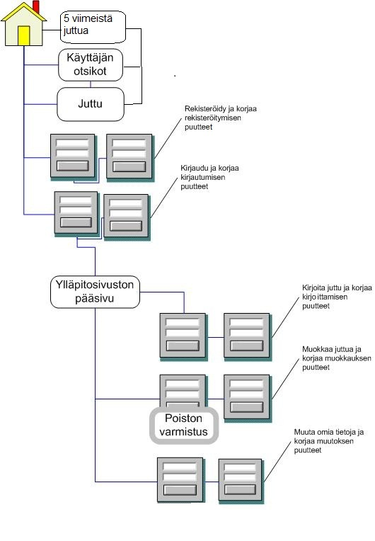

1. Tehtävä
- tehtävä
- suunnitelma
- tietokannan toteutus
- käyttöliittymä
- runko järjestelmään
- tietojen lisäys lukijan näkymässä
- autentikointi
- jutun lisäys ylläpitonäkymässä
- tietojen haku lukijan näkymässä
- tietojen haku ylläpitonäkymässä
- lisäykset
Tämän tunnin tavoite
Perehdy use case- kaavion, näyttökartan ja ulkoasusuunnitelman laatimiseen.
Tehtävä
Laadi vieraskirja liitettäväksi harjoitusten palautuskansioon. Vieraskirjassa on oltava vähintään seuraavan (yhdessä tehtävän mallin mukaisen) luettelon mukaiset lukijan ja kirjoittajan toiminnot.
Toiminnot
Mallivieraskirjassa ovat seuraavat toiminnot:
Lukija
- voi lukea vieraskirjaan kirjoitetut 5 viimeistä juttua
- voi lukea yhden kirjoittajan kaikki jutut
- voi lukea jutun kerrallaan
- voi rekisteröityä kirjoittajaksi (mallissa ei moderaattorin ei tarvitse hyväksyä kirjoittajaa, mutta toiminnon voi lisätä omaan vieraskirjaansa)
Kirjoittaja
- voi kirjautua ylläpitosivulle
- voi muuttaa rekisteröinnissä antamiaan tietoja
- voi kirjoittaa jutun
- voi muokata ja poistaa juttuja
Lisäksi vieraskirjaan voisi kuulua moderaattori - tässä mallissa roolia ei toteuteta (rajaus). Mahdollisia toimintoja voisivat olla
- voi kirjautua ylläpitosivulle
- voi lisätä, poistaa ja muuttaa kirjoittajien tietoja (jos poistat kirjoittajan, myös kirjoittajan juttujen tulee poistua)
- voi muokata ja poistaa juttuja
Määrittele toiminnot (use case)
Mallivieraskirjassa toiminnot ovat seuraavan kuvan mukaiset:

Ulkoasu (PhotoShop-kuva)
Mallivieraskirjan ulkoasu on yksinkertainen - kuvassa etusivu, taustakuvat ja fontit.
Kun laadit kuvaa, sijoita sivuittain muuttuvat osat (esim. tekstit) eri layereille (kaikissa sivuissa toistuvaa osaa voit käyttää pohjana tarkemmille suunnitelmille).

Näyttökartta
Sivusto koostuu seuraavista näkymistä:
